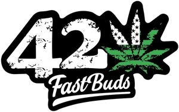

Trade Mark Journal No.2025/015 11 April 2025
WO0000001795620 (10,14,16,18,21,25,31,34,35)
Office of origin: Switzerland
Date of International Registration:4 January 2024
Date of designation in the UK:
4 January 2024

The mark contains the colour green.
International priority date claimed: 3 November 2023
(Switzerland)
(807988)
- Class 10
- Sanitary masks.
- Class 14
- Watches.
- Class 16
- Stickers (stationery); posters of paper.
- Class 18
- Bags.
- Class 21
- Non-electric grinders for kitchen use; cups; fabric plant pots; trays for household purposes.
- Class 25
- T-shirts; hoodies; caps; baseball caps; socks.
- Class 31
- Raw and unprocessed agricultural and horticultural products; seeds for planting; seed germ for botanical use, namely, seeds for planting; seedlings for planting; plant cuttings, namely, live plants; natural plants and flowers; live shrubs; live plants; cannabis plants; unprocessed herbs; pollen, raw material; animal foodstuffs; roots for animal consumption; concentrated feed for animals, namely, animal feed; Cattle fodder; beverages for pets.
- Class 34
- Ashtrays for smokers; lighters for smokers.
- Class 35
- Advertising; promotional marketing; sales promotion (for third parties); organizing fairs and exhibitions for economic or advertising purposes; distributing and disseminating advertising and marketing material, namely, leaflets, prospectuses, printed material and product samples; retail services, wholesale services, online retail services and online wholesale services in the field of seeds for planting, seedlings, cuttings, natural plants, herbs, pollen, animal feed.
Crassula Group s.r.o.
Representative: Forresters IP LLP, The Gherkin (11th Floor), 30 St Mary Axe London EC3A 8BF UNITED KINGDOM